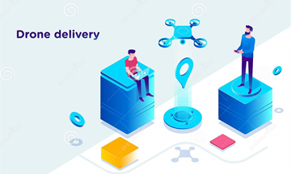
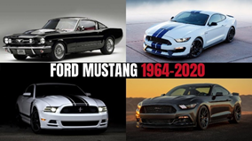

Se engloban en 4 grupos el primero es referte a la:
Estructura
La cual incluye
Innovación de modelo de negocio
Enfocada en los procesos de datos e informática
Innovación Organizativa
Enfocada a adaptar la organización a nuevos procesos y cambios
Innovación de Procesos
Gestion
Enfocado en la gestión administrativa, en la forma de como gestionamos nuestra organización
Produccion
Enfocada en los procesos de producción como por ejemplo una nueva maquina
Innovación de Oferta
Productos/Servicios
Enfocado en los productos ejemplo un nuevo diseño en el producto o una nueva patente
Sistemas
Enfocada en las creaciones de sistemas para facilitar nuevos sistemas toma como referencia los tiempos cambiantes cambio continuo.
Innovacion de Entregas
Canal
En los últimos años ha tomado fuerza las ventas por internet, tiendas online
Experiencias del Cliente
Enfocada a que cuando el cliente está comprando un producto no solo compre el producto, sino que también viva una experiencia y aprenda trucos para aplicar según el producto obtenido.
Existen otros tipos dentro de estos tenemos:
Innovación en Tecnología
Implica el desarrollo y ajuste de nuevas tecnologías, las cuales sentarán bases para el futuro desarrollo de productos y procesos.
Innovación Tecnológica
Consiste en desarrollar un nuevo producto o servicio a partir del conjunto de conocimientos tecnológicos existentes.
Innovación en la Gestión
Son las mejoras en la forma de organizar los recursos a fin de apoyar la generación de productos o procesos.